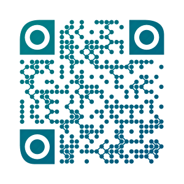

Practical implementation of CI/CD and platform architecture for web application development

bugoga.ga
-- root record
inst1.bugoga.ga
-- node record
testing.bugoga.ga
-- testing server
grafana.bugoga.ga
-- monitoring server
azure.bugoga.ga
-- azure containers server
k8s.bugoga.ga
-- google kubernetes engine server
jenkins.bugoga.ga
-- jenkins server
CICD
-- CI/CD files repo